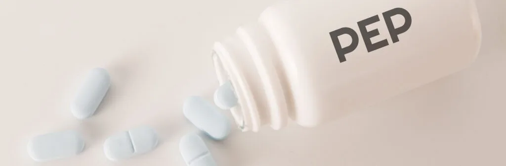

Expanded Nursing Uganda Explanation
Post exposure prophylaxis (PEP and ARV’s) links cause, transmission, prevention, assessment and treatment support. Good nursing notes should include infection prevention, danger signs, adherence support and community health education.
Contents, 17 sections (tap to expand)
01 Post-exposure prophylaxis (PEP)
Post-exposure prophylaxis (PEP) involves the short-term use of antiretroviral medications to reduce the risk of acquiring HIV infection after potential exposure , either occupational or non-occupational.
02 Types of Exposure:
- Occupational Exposures : Occur in healthcare or laboratory settings, including needle stick injuries or body fluid splashes.
- Non-occupational Exposures: Include unprotected sex, assault (e.g., rape), and accidents.
Steps for Providing PEP:
Step 1: Clinical Assessment and First Aid
- Rapidly assess the client to evaluate exposure and risk, providing immediate care.
- For needle stick injuries : Avoid squeezing, wash the site with mild disinfectant, and do not use strong antiseptics.
- For body fluid splashes on intact skin: Wash the area immediately with mild disinfectant.
Step 2: Eligibility Assessment
- Provide PEP if exposure occurred within 72 hours and the exposed individual is HIV-negative.
- PEP is not provided if the individual is already HIV-positive, the source is known to be HIV-negative, or if exposure involves bodily fluids posing minimal risk.
Step 3: Counselling and Support
- Provide comprehensive counseling on HIV risk, PEP benefits and side effects, adherence, and support for further assistance, especially in cases of sexual assault.
Step 4: Prescription
- PEP should be started as early as possible, not beyond 72 hours of exposure.
- Recommended regimens include :
- For pregnant mothers/adults: TDF+3TC+ATV/r.
- For children: ABC+3TC+LPV/r.
- A complete course of PEP should run for 28 days.
- Do not delay the first doses because of a lack of baseline HIV test.
- Document the event and patient management in the PEP register (ensure confidentiality of patient data).
Step 5: Provide follow-up
- Discontinue PEP after 28 days.
- Perform follow-up HIV testing three months after exposure.
- Counsel and link to HIV clinic for care and treatment if HIV-positive.
- Provide prevention and education/risk reduction counselling if HIV-negative.
03 ORAL PRE-EXPOSURE PROPHYLAXIS (PrEP)
PrEP involves using ARV drugs by individuals not infected with HIV to prevent HIV acquisition .
Initially, PrEP will be available in select accredited ART sites with the capacity and funding for comprehensive services. Further rollout depends on outcomes. PrEP isn’t yet available in all public health facilities.
04 The process of providing pre-exposure prophylaxis (PrEP)
Step 1: Eligibility for PrEP
PrEP is suitable for HIV-negative individuals at high risk, including those with multiple sexual partners, engaging in transactional sex, injecting drugs or alcohol abuse, multiple STI occurrences, discordant couples, recurrent PEP users, and those engaging in anal sex.
Step 2: Screening for PrEP eligibility
After meeting criteria:
- Confirm HIV-negative status.
- Rule out acute HIV infection.
- Assess hepatitis B status; negative indicates PrEP eligibility, positive requires management.
- Assess contraindications to TDF/FTC.
Step 3: Steps to initiation of PrEP
Provide risk-reduction and adherence counselling:
- Distribute condoms and educate on usage.
- Develop a medication adherence plan.
- Prescribe TDF (300mg) and FTC (200mg) once daily.
- Initially, provide a 1-month TDF/FTC prescription with a follow-up in 1 month.
- Counsel on TDF/FTC side effects.
Follow-up/monitoring clients on PrEP
- Schedule a two-month follow-up after the initial visit, then quarterly.
- Conduct HIV antibody tests every three months.
- Perform pregnancy tests for women based on clinical history.
- Review understanding of PrEP, barriers to adherence, tolerance, and side effects.
- Evaluate and support PrEP adherence at each visit.
- Assess for STI symptoms and treat as needed.
Guidance on discontinuing PrEP
Discontinue PrEP if:
- HIV infection occurs.
- Risk of HIV acquisition decreases due to lifestyle changes.
- Intolerable toxicities or side effects arise.
- Chronic non-adherence persists despite intervention.
- Personal choice.
- In sero-discordant relationships, if the positive partner achieves sustained viral load suppression (condoms should still be used consistently).
05 MOTHER-TO-CHILD TRANSMISSION OF HIV
Approximately one-third of the women who are infected with HIV can pass it to their babies.
06 Elements of Elimination of Mother-to-Child Transmission
- Prong 1: Primary prevention of HIV infection for women and men of reproductive age, including adolescents.
- Prong 2: Prevention of unintended pregnancies among women living with HIV, including adolescents and their partners.
- Prong 3: Prevention of HIV transmission from women living with HIV to their infants, including pregnant and breastfeeding women, as well as adolescents living with HIV.
- Prong 4 : Provision of treatment, care, and support to women infected with HIV, their children, and their families, including women living with HIV and their families.
Cause and Time of Transmission
- During pregnancy: 15-20%
- During labour and delivery: 60%-70%
- After delivery through breastfeeding: 15%-20%
Predisposing Factors
- High maternal viral load
- Depleted maternal immunity (e.g., very low CD4 count)
- Prolonged rupture of membranes
- Intrapartum haemorrhage and invasive obstetrical procedures
- Increased risk for the first twin compared to the second twin in twin pregnancies
- Premature birth poses a higher risk compared to full-term birth
- Mixed feeding carries a higher risk than exclusive breastfeeding or replacement feeding
Investigations
- Blood: HIV serological test
- HIV DNA PCR testing of babies
Management
All HIV services for pregnant mothers are offered in the MCH clinic. After delivery, mother and baby will remain in the MCH postnatal clinic until the HIV status of the child is confirmed. Then, they will be transferred to the general ART clinic.
The current policy aims at the elimination of Mother-to-Child Transmission (eMTCT) through a continuum of care.
07 Management of HIV Positive Pregnant Mother
Key Interventions for eMTCT:
- Routine HIV Counseling and Testing during ANC (at 1st contact. If negative, repeat HIV test in the third trimester/ labour).
- Enrolment in HIV care if the mother is positive and not yet on treatment.
- If the mother is already on ART, perform viral load and continue the current regimen.
- ART in pregnancy, labour, post-partum, and for life – Option B+.
Recommended ARV for option B+:
One daily Fixed Dose Combination (FDC) pill containing TDF + 3TC + EFV started early in pregnancy irrespective of the CD4 cell count and continued during labor and delivery, and for life.
Alternative regimens for women who may not tolerate the recommended option are:
- If TDF contraindicated: ABC+3TC+EFV
- If EFV contraindicated: TDF + 3TC + ATV/r
- TDF and EFV are safe to use in pregnancy.
- Those newly diagnosed during labor will begin HAART for life after delivery.
Prophylaxis for Opportunistic Infections
Cotrimoxazole 960 mg 1 tab daily during pregnancy and postpartum –– Mothers on cotrimoxazole DO NOT NEED IPTp with SP for malaria.
08 Care of HIV Exposed Infant
HIV-exposed infants should receive care at the mother-baby care point together with their mothers until they are 18 months old . The goals of HIV-exposed infant care services are:
- To prevent the infant from being HIV infected.
- Among those who get infected: to diagnose HIV infection early and treat it.
- Offer child survival interventions to prevent early death from preventable childhood illnesses.
The HIV Exposed Infant and the mother should consistently visit the health facility at least nine times during that period i.e (i.e., at 6, 10 and 14 weeks, then at 5, 6, 9, 12, 15 and 18 months).
Nevirapine Prophylaxis
Provide NVP syrup from birth for 6 weeks : Give NVP for 12 weeks for babies at high risk, that is breastfeeding infants who mothers:
- Have received ART for 4 weeks or less before delivery; or
- Have VL >1000 copies in 4 weeks before delivery; or
- Diagnosed with HIV during 3rd trimester or breastfeeding period (Postnatal)
Do PCR at 6 weeks (or at first encounter after this age) and start cotrimoxazole prophylaxis
- If PCR positive , start treatment with ARVs and cotrimoxazole and repeat PCR (for confirmation)
- If PCR negative and the baby never breastfed , the child is confirmed HIV negative. Stop cotrimoxazole, continue clinical monitoring and do HIV serology test at 18 months.
- If PCR is negative but the baby has breastfed/is breast feeding , start/continue cotrimoxazole prophylaxis and repeat PCR 6 weeks after stopping breastfeeding.
- Follow up any exposed child and do PCR if they develop any clinical symptom suggestive of HIV at any time and independently of previously negative results.
- For negative infants , do serology at 18 months before final discharge.
09 Dosages of Nevirapine
- Age Group Weight Range Dosage Syrup Volume (10 mg/ml)
- Child 0-6 weeks 2-2.5 Kg 10 mg once daily 1 ml
- Child 0-6 weeks >2.5 Kg 15 mg once daily 1.5 ml
- Child 6 weeks – 12 weeks Any weight 20 mg once daily 2 ml
Cotrimoxazole Prophylaxis: Provide cotrimoxazole prophylaxis to all HIV exposed infants from 6 weeks of age until they are proven to be uninfected.
- Child <5 kg : 120 mg once daily
- Child 5-14.9 kg : 240 mg once daily
Isoniazid (INH) Preventive Therapy (IPT):
- Give INH for six months to HIV-exposed infants who are exposed to TB.
- Isoniazid 10 mg/kg + pyridoxine 25 mg daily
- For newborn infants, if the mother has TB disease and has been on anti-TB drugs for at least two weeks before delivery, INH prophylaxis is not required.
Immunization
- Immunise HIV exposed children as per national immunisation schedule.
- In case of missed BCG at birth, do not give if the child has symptomatic HIV.
- Avoid yellow fever vaccine in symptomatic HIV.
- Measles vaccine can be given even in symptomatic HIV.
10 Counselling on Infant Feeding Choice
- Explain the risks of HIV transmission by breastfeeding (15%) and other risks of not breastfeeding (malnutrition, diarrhoea).
- Mixed feeding may also increase the risk of HIV transmission and diarrhoea.
- Tell her about options for feeding, advantages, and risks.
- Help her to assess choices, decide on the best option, and then support her choice.
11 Feeding Options
- Recommended option : Exclusive breastfeeding, then complementary feeding after the child is 6 months old.
- Exclusive breastfeeding stopping at 3-6 months old if replacement feeding is possible after this.
- If replacement feeding is introduced early, the mother must stop breastfeeding.
- Replacement feeding with home-prepared formula or commercial formula and then family foods (provided this is acceptable, feasible, safe, and sustainable/affordable).
12 If Mother Chooses Breastfeeding
The risk may be reduced by keeping the breasts healthy (mastitis and cracked nipples raise HIV infection risk).
Advise exclusive breastfeeding for 3-6 months.
13 If Mother Chooses Replacement Feeding
- Counsel and teach her on safe preparation, hygiene, amounts, times to feed the baby, etc.
- Follow up within a week from birth and at any visit to the health facility.
14 Nursing Uganda Clinical Lens
Use Post exposure prophylaxis (PEP and ARV’s) as a practical nursing topic, not only a memorized definition. Link cause, transmission, incubation, clinical features, treatment support and prevention.
- What to understand first: define post exposure prophylaxis (pep and arv’s), identify the normal or expected pattern, then explain what changes when the patient is unwell.
- Why it matters in care: the nurse must recognize risk early, explain findings clearly, document accurately and know when to escalate.
- How to revise it: connect each point to assessment, nursing diagnosis or care problem, intervention, rationale and evaluation.
15 Assessment Guide
- Temperature, pulse, respiratory status, hydration, pain, rash, wounds, stool, urine or sputum changes.
- Exposure history, travel, contacts, vaccination status and comorbidities.
- Specimen orders, isolation needs, antimicrobial history and danger signs.
16 Nursing Priorities, Rationales and Outcomes
- Use standard precautions and transmission-based precautions where needed.
- Support hydration, nutrition, medicines, monitoring and early referral for severe disease.
- Teach prevention, adherence, hygiene, safe water, vector control or contact tracing as relevant.
The rationale for these priorities is patient safety: nursing actions should prevent deterioration, reduce discomfort, support recovery and create clear evidence for the next caregiver.
- Expected outcome: Symptoms improve, complications are detected early, transmission risk is reduced and treatment is completed correctly.
17 Patient Teaching and Revision Check
- Explain post exposure prophylaxis (pep and arv’s) in simple language the patient or caregiver can repeat back.
- Teach warning signs, medicine or follow-up instructions, hygiene or lifestyle points where relevant.
- For exams, prepare a short answer using: definition, causes or risk factors, signs, assessment, management, complications and prevention.
- For ward practice, document baseline findings, actions taken, patient response and the plan for review.
Illustrations and Diagrams (1)

Related Video Lectures
Watch nursing lecture videos on YouTube for this topic. Opens in a new tab.
Watch on YouTubeExternal link: YouTube may use its own cookies and terms. Nursing Uganda is not affiliated with YouTube.